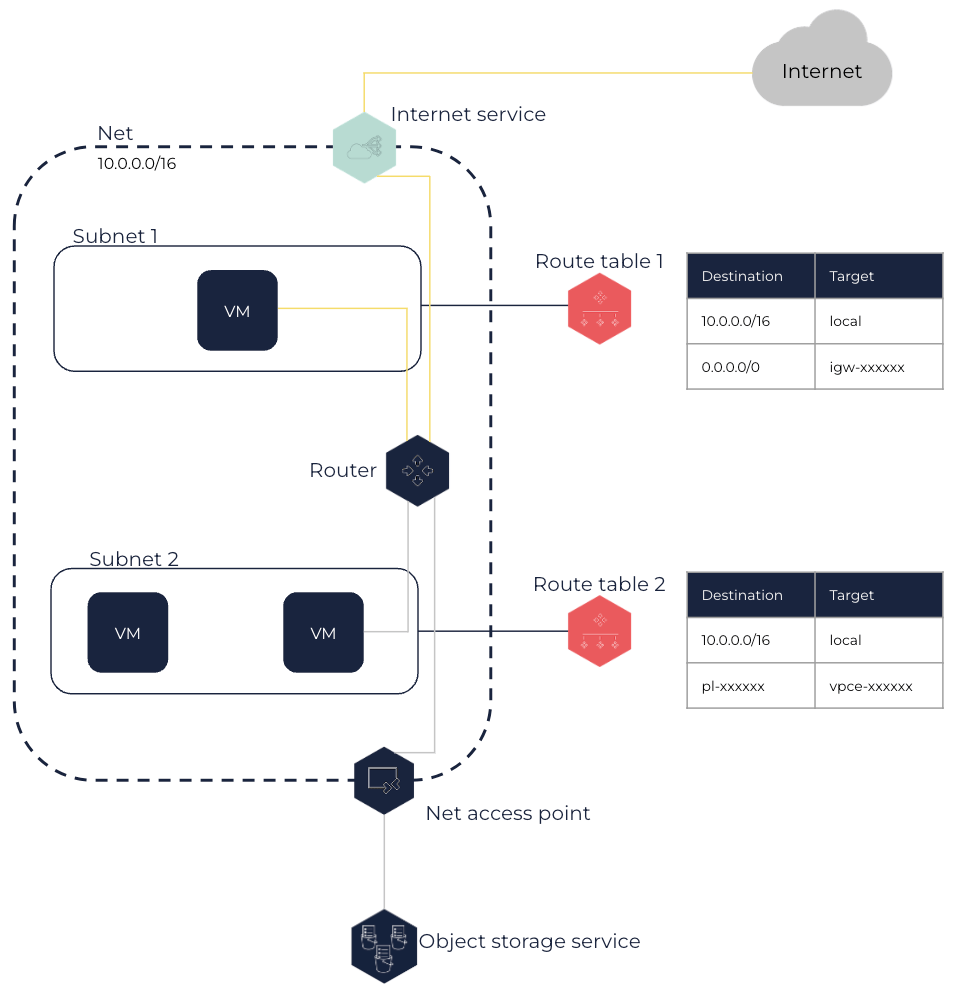

About Route Tables
Route tables enable you to control Subnet traffic routing thanks to routes that you create in them. Every Net is created with a default route table that you can modify, but you can also create your own custom route table for each Subnet.
You can route traffic to different elements like an internet service or a Net access point. Traffic targeting an IP of the Net CIDR block is always locally routed.
Route Tables and Subnets
Route tables control network traffic routing thanks to rules called routes that indicate where network traffic is directed. They are created for a Net and are used by its router, which is automatically created within your Net, to determine how to route traffic.
Any Subnet in a Net must be associated with a route table, which controls routing for all virtual machines (VMs) in the Subnet. A same route table can be associated with several Subnets, but a Subnet can only be associated with a single route table.
|
As it is recommended to dedicate a Subnet to one application only, it is also recommended to use one route table and one security group per Subnet. |
In the following schema, each Subnet is associated with a route table. VMs in Subnet 1 can access the internet through the internet service, and VMs in Subnet 2 can access an object storage service using the Net access point.

For more information about routes to an internet service and to a Net access point, see the Routes and Routing Options section below.
Main Route Table and Custom Route Tables
Main Route Table
When creating a Net, a route table is also automatically created and considered as the main route table. The main route table acts as an implicit router in your Net: it controls traffic routing for all Subnets that are not explicitly associated with a route table. It is therefore implicitly associated with any Subnet you create in the Net until you explicitly associate it with a route table.
The main route table created with the Net only contains the local route at creation, which routes any traffic directed to a target within the Net CIDR block within the Net itself. This route cannot be modified or deleted. You can add or remove routes in the main route table, and also modify them. However, you cannot delete the main route table.
You can also define which route table is the main one for the Net, which modifies the route table used for any new Subnet or for Subnets that are not explicitly associated with any route table.
|
You can explicitly associate a Subnet with the main route table so that the route table used by this Subnet is not modified in case you define another route table as the main one. |
Custom Route Tables
You can create additional route tables for your Net that you can then associate with one or more Subnets. You can then add the routes you need to the route table, replace them or remove them if needed. You can also delete a custom route table that is not associated with any Subnet anymore.
Any route table you create contains the local route that you cannot delete or modify. To protect your Net, you can leave the main route table with only the default local route, and explicitly associate each new Subnet with a custom route table you created. Any new Subnet can therefore only direct traffic within the Net until you explicitly allow it to direct traffic elsewhere using routes that you add to its route table. This enables you to control how outbound traffic is routed for each Subnet of your Net.
Routes and Routing Options
A route specifies:
-
The traffic destination, in CIDR notation. It can be a range of IPs or a single IP (using a
/32prefix). -
The target, that is the network device used to reach the traffic destination.
You can route traffic using the following targets:
-
Local: A
localroute is automatically added to any route table created in a Net, with the Net CIDR block as destination andlocalas target. Therefore, traffic from VMs to an IP belonging to the Net CIDR block remains in the Net local network.You cannot delete or modify the
localroute. -
An internet service: This enables VMs in the Subnet and that have an associated public IP to directly connect to the internet through the internet service attached to the Net. To do this, you need to add a route with the
0.0.0.0/0CIDR block as destination and the ID of an internet service as target. For more information about internet services, see About Internet Services.
For example, the route table of a Subnet with VMs directly connected to the internet in a Net with the 10.0.0.0/16 CIDR block and theigw-12345678internet service attached to it has the following routes:Destination Target 10.0.0.0/16
local0.0.0.0/0
igw-12345678 -
A NAT service: This enables VMs in the Subnet to indirectly connect to the internet through a NAT service. To do so, you need to add a route with the
0.0.0.0/0CIDR block as destination and the ID of the NAT service as target. For more information about NAT services, see About NAT Services.
For example, the route table of a Subnet with VMs indirectly connected to the internet in a Net with the 10.0.0.0/16 CIDR block and using thenat-12345678NAT service attached to the Net to direct traffic to the internet has the following routes:Destination Target 10.0.0.0/16
local0.0.0.0/0
nat-12345678 -
A VM or a network interface within the Net: This enables VMs in a Subnet to send traffic to an VM or a network interface in particular. You can route traffic to an VM when it only has one network interface. If the VM have network interface cards (NICs) (FNI) attached, you need to route traffic to one of its network interfaces. To do so, you need to add a route with the appropriate CIDR block as destination, and the ID of the VM or of the network interface as target.
For example, in a Net with the 10.0.0.0/16 CIDR block, if an administration VM has aneni-11111111network interface in a Subnet A with the 10.10.0.16 IP and another network interface in a Subnet B, the route table of a Subnet with VMs that need to connect to this administration VM in Subnet A has the following routes:Destination Target 10.0.0.0/16
local10.10.0.10/32
eni-11111111 -
A virtual gateway (VGW): This enables VMs in your Subnet to direct traffic to a distant network using a VPN or DirectLink connection. To do so, you need to add a route with the CIDR block of the distant network as destination and the ID of a VGW attached to your Net as target, and create a VPN or DirectLink connection using this VGW. For more information, see VPN Connections and DirectLink.
For example, the route table of a Subnet in a Net with the 10.0.0.0/16 CIDR block directing traffic to your internal network with the 192.168.1.0/24 CIDR block through a VPN connection using thevgw-12345678VGW has the following routes:Destination Target 10.0.0.0/16
local192.168.1.0/24
vgw-12345678 -
A Net access point: This enables you to create a private connection between your Net and an OUTSCALE service. The appropriate route with the prefix list ID of the service (
pl-xxxxxxxx) as destination and the Net access point ID (vpce-xxxxxx) as target is automatically added to the route tables you specify for the Net access point. For more information about Net access points, see About Net Access Points. For more information about prefix lists, see Getting Information About Prefix Lists.You cannot delete or modify this route, but you can modify the route tables used by the Net access point.
-
A Net peering: This enables you to direct traffic to a peered Net. To do so, you need to add a route with all or part of the peered Net CIDR block as destination and the ID of the Net peering as target. For more information about Net peerings, see About Net Peerings.
The owner of the peered Net must add a route in its Net route tables to route traffic to your Net.
For example, the route table of a Subnet in a Net A with the 10.0.0.0/16 CIDR block directing traffic to a peered Net B with the 192.168.1.0/24 CIDR block using the
pcx-12345678Net peering has the following routes:Destination Target 10.0.0.0/16
local192.168.1.0/24
pcx-12345678The peered Net B route tables must has the following routes:
Destination Target 192.168.1.0/24
local10.0.0.0/16
pcx-12345678If the traffic destination matches several routes in the associated route table, the most specific route with the narrowest CIDR block matching this destination is always the one used to route traffic.
A route is always in the following state:
-
Active: The route is active and is used to route traffic.
Related Page